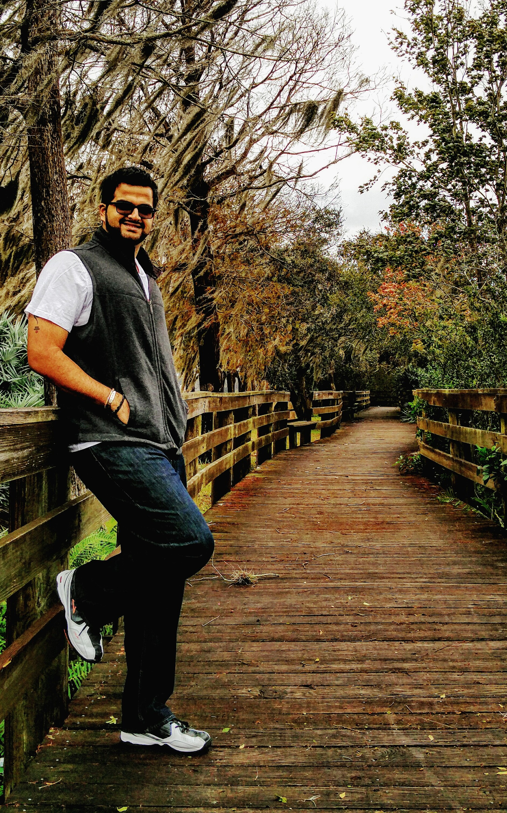
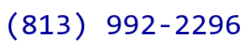

 Anirudh Srikant Iyengar
Doctoral Student 
Email:
Phone: 
Follow me on:

About Me
Research Interests
-
Security using spintronics: In this project I am investigating the prospects and challenges of spintronic devices towards hardware security. -
Investigating the emerging threat models, detection and protection mechanisms associated with spintronic memories. [J4, C4]. Exploit the randomness in Domain Wall dynamics for security primitives such as Physically Unclonable Functions. [J1, J4, C2]. Aside from this, I have am also investigating the use of multi-threshold based CMOS logic, aimed at camouflaging ICs against cloning. [C6]. -
Application of spintronics: In this project I am investigating the state retentive sequentials and non-volatile cache. Modeling, circuit design and micro-architectures for robust, low-power and energy efficient Domain wall memories (DWM). [J1, J2, C1, C3]. Explore the application of DWM for implementing hardware accelerators. [C5]. -
Reliability and retention analysis of spin transfer torque RAM (STTRAM) memory: In this project I am modeling STTRAM lifetime and retention and developing algorithms for test time improvement. [WIP]
News
2016
- 09/19: Paper Submitted to DATE 2016.
- 08/20: Began my new PhD journey @ Penn State University PSU 2016.
- 08/19: Completed my work as an intern at Security Center of Excellence (SeCoE) - Intel Corp 2016.
- 08/15: Special Issue journal paper has been accepted in JETCAS 2016.
- 07/22: Full paper accepted in DFT 2016.
- 07/10: Full paper accepted in D&T 2016.
- 06/07: Won the Best Poster Presentation award at the 2016 PhD Forum at DAC .
- 05/31: Abstract accepted for a full paper & poster presentation in TECHCON 2016.
- 05/24: Full paper accepted in ISTFA 2016.
- 05/16: Began work as an intern at Security Center of Excellence (SeCoE) - Intel Corp 2016.
- 04/25: Paper submitted in ICCAD 2016.
- 04/25: Abstract submitted in ISTFA 2016.
- 04/15: Submission titled "Spintronic memory towards Secure and Energy-Efficient Computing" has been accepted to the PhD Forum at DAC 2016.
- 02/18: Work-In-Progress paper accepted in ETS 2016.
- 02/16: Work-In-Progress paper accepted in DAC 2016.
- 02/09,10: Presented poster titled "Threshold Defined Logic Engines And Applications" at FICS 2016.
2015
- 12/31: Paper submitted in D&T 2016.
- 11/24: Paper submitted in DAC 2016.
- 11/21: Placed Second place in the Intramurals Mens Doubles Badminton Tournament.
- 11/04: Paper accepted for presentation in GOMACTech 2016.
- 09/18: Paper Submitted to DATE 2016.
- 09/11: Paper Submitted to GOMACTech 2016.
- 09/02: Full paper accepted in ASPDAC 2016.
- 07/28: New journal paper accepted in special issue of ACM JETC 2016.
- 07/15: Article in IEEE XPLORE Innovation Spotlight, titled Domain Wall Memory: The Next Big Thing in Hardware Security? June 2015.
- 07/28: New journal paper accepted in TCAS-I 2016.
- 03/14: Filed a provisional patent on "Non-Volatile Flip-Flop with Enhanced-Scan Capability to Sustain Sudden Power Failure".
- 02/17: Work-In-Progress paper accepted in DAC 2015
2014
- 12/02: Paper submitted in DAC 2015.
- 11/16: Team LOGICS won 3rd spot in Embedded Security Challenge in CSAW 2014.
- 11/09: Special Issue journal paper has been accepted in JETCAS 2015.
- 10/10: Passed Ph.D. Qualifier.
- 05/07: Filed a provisional patent on "Methods and Apparatus to Build Physically Unclonable Functions Using Spintronic Domain Wall Memory".
- 09/02: Full paper accepted in ISLPED 2014.
- 02/16: Received USF alumni travel grant.
- 02/15: Full paper accepted in DAC 2014.
- 01/07: Full paper accepted in HOST 2014.
2013
- 12/01: Paper submitted in DAC 2014.
- 07/24: Joined LOGICS research group.